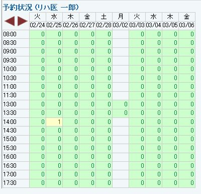

（２）ログイン医師の休日表設定画面が表示されます。
（３）病院休日表等に倣って設定します。
（４）本人休日表では、休診のほかにコマ数の調整を行なうこともできます。

１２ 診察・休診日設定
１．病院休日表：病院全体の休診日、時間帯を設定する機能です。
（１）管理メニューから「病院休日表」を選択します。
（２）病院休日表メニューが起動します。
（３）休診、診療の設定をします。何も設定が無い場合、診療の状態になります。
（４）曜日指定か、日付指定を選択します。
（５）日付で指定する場合、何年の何月何日、何時から何時までといった指定が出来ます。
（６）限定的な設定をせずにいることで「毎月の何日は休診」といった設定もできます。例では、毎月6日が休診です。
（７）臨時休診日のような場合には、日付を指定して休診設定も行なえます。
（８）曜日設定の場合も「2月の第2火曜日」のような指定も出来ますが「毎週水曜日」であったり、「毎月第2第4火曜日」のようなご利用法が多くなると思います。例の形では、「毎週水曜日及び、毎月第2第4火曜日が休診」となります。
（９）挿入ボタンを押すことで、任意の場所に条件を追加することが出来ます。
（１０）条件は、上から順に反映されていき、矛盾があった場合には下に書かれたものが最終的に反映されます。
（１１）例のように診療予定に休診予定を重ね、さらにその休診予定に診療予定を重ねたような場合、
（１２）最初の診察予定は上書きされ、さらに最後の診察予定が上書きされるようになります。

（１３）必要な設定を全て行った後「保存」を行なうとカレンダーに反映されます。
２．医師（管理者）休日表：事務の方など、管理者の立場で各医師の休診日、診察時間帯を設定する機能です。
（１）管理メニューから「医師（管理者）休日表」を選択します。
（２）「カレンダーを選択」として、登録医師が現れるので、ラジオボタンで選択します。
（３）選択した医師の休日設定画面が現れます。
（４）病院休日設定同様に、休診予定を設定し、保存します。
（５）医師休日表では、一コマ（３０分）単位の枠内に診察する患者数を設定することができます。
（６）規定以上の予約数が入ると、予約カレンダーで赤く表示されます。
（７）規定数を越える予約を入れようとすると、警告メッセージが表示されます。
３．医師（本人）休日表：医師ログインでのみ使用できます。自身の休診日、診察時間帯を設定する機能です。
（１）管理メニューから「医師（本人）休日表」を選択します。
（２）ログイン医師の休日表設定画面が表示されます。
（３）病院休日表等に倣って設定します。
（４）本人休日表では、休診のほかにコマ数の調整を行なうこともできます。